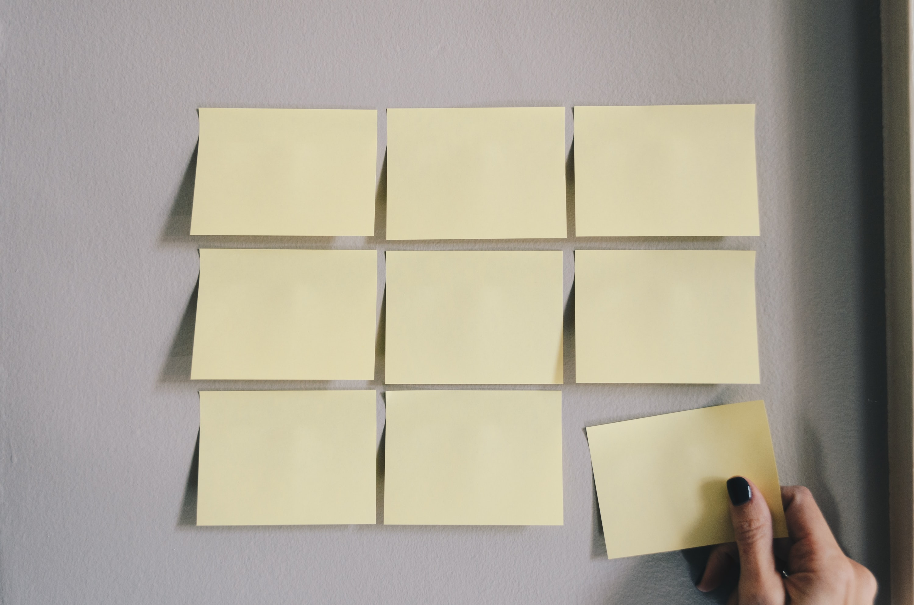

Mainpage
광고홍보학과
디지털인문예술
일상
| My Bucket List |

가장 큰 목표 :
스스로 만족하는 사람이 되는 것
[ 언제 이룰 지 모르는 버킷리스트 ]
1월 1일 일출 보기
읽고 싶은 책 쌓아놓고 하루종일 읽기
비전 보드 만들기
겨울 한라산 등반하기
혼자 여행 가기
복권 & 로또 사기
스위스 가서 대자연 보고 감탄하기
폴라로이드 사고 맘껏 찍기
나만의 그림체 갖기
자동착 극장 가기